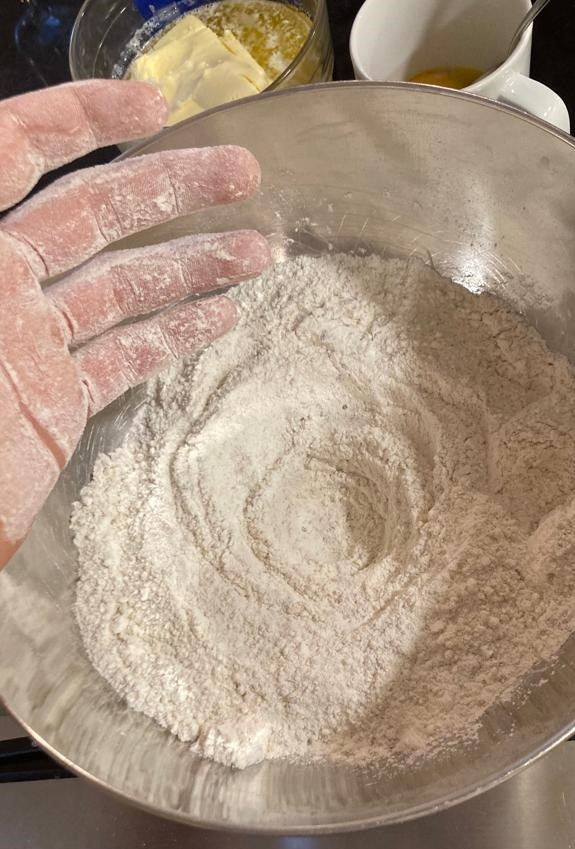
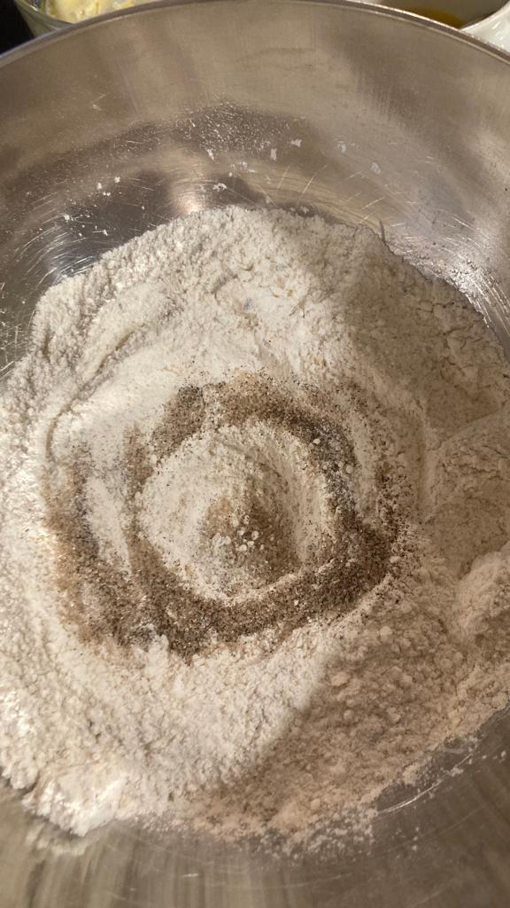
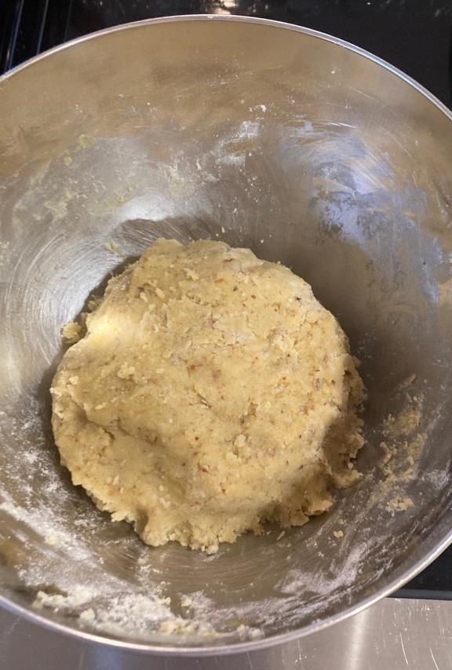
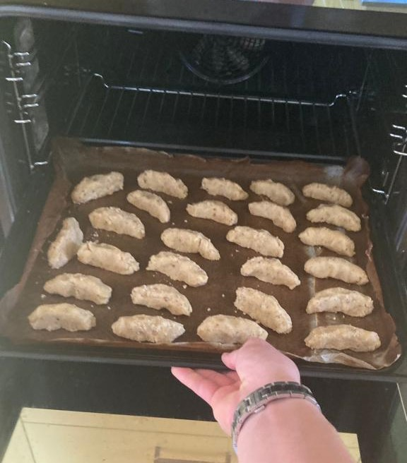

Which components? 300g Flour, 100g ground almonds, 120g sugar/powdered sugar,
8g vanilla sugar, a pinch of salt, 225g soft butter,
3 egg yolks, your hands
1.1) First you get all the ingredients and materials you need.
1.2) Mix the almonds with the powdered sugar and the flour in a bowl.

1.3) Add the vanilla sugar, the soft butter and the egg yolks into the same bowl.

1.4) Knead everything quickly with your own hands.

1.5) The dough should be smooth. Wrap the boil in foil and let the bowl with the dough rest for an hour.
Step 2)
Which components? Preheated oven, baking tray(s), parchment paper(s), dough, your hands
2.1) Preheat the oven to 180 degrees for top/bottom heat or 160 degrees for circulating air.
Line baking tray with parchment paper. Form some dough to a walnut-sized pieces of dough and then form and place them on the tray with a little distance to another.
2.2) Then form the pieces to little moons/croissants.
2.3) Put the tray in the preheated oven.
